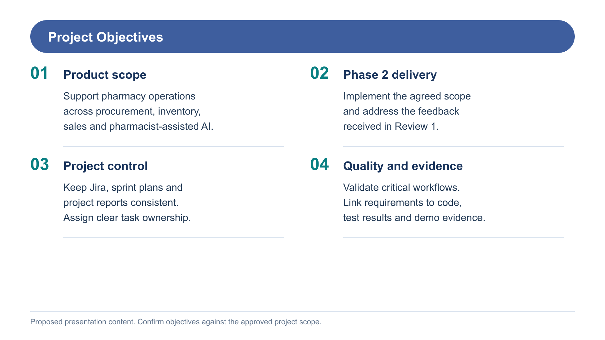
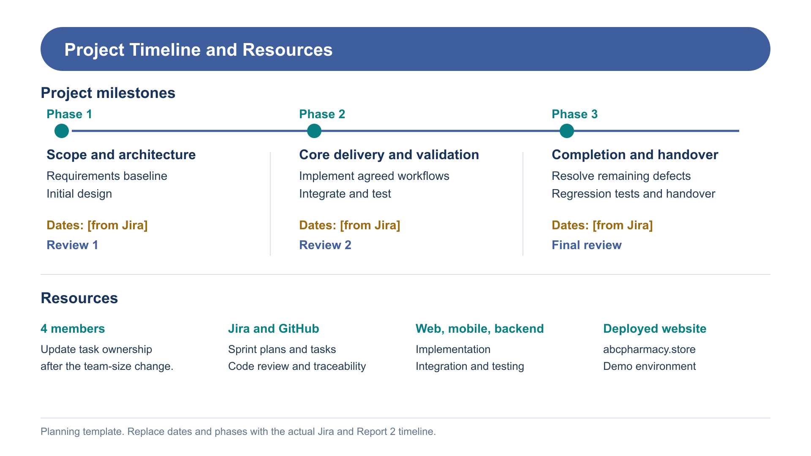
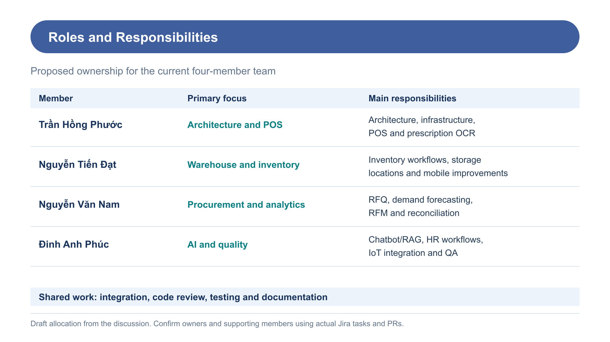
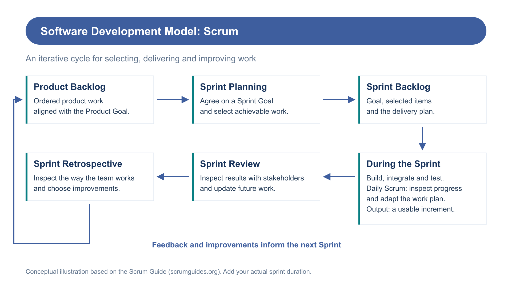
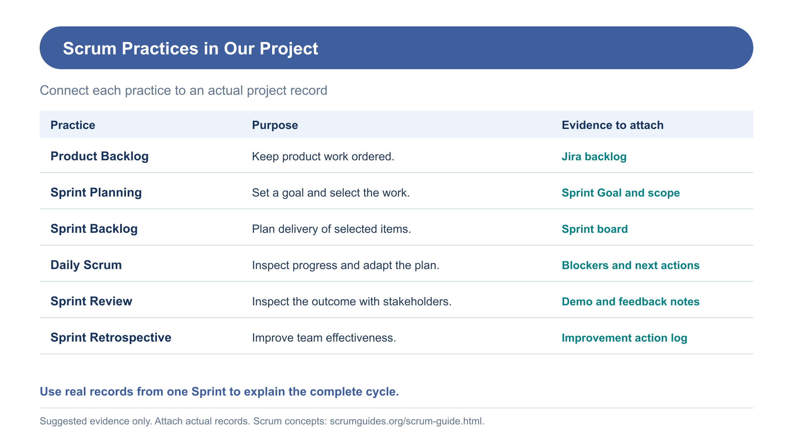

Minh họa thiết kế riêng. Cần điền timeline thật và xác nhận phân công. Ảnh PNG 1920 × 1080, kèm SVG.
Dùng cho slide mục tiêu. Đối chiếu lại phạm vi và tiêu chí hoàn thành đã được nhóm chốt.

Đây là mẫu timeline, chưa phải timeline đã xác minh. Thay [from Jira] bằng ngày thật, điều chỉnh giai đoạn theo Report 2.

Phân công đề xuất dựa trên trao đổi trước. Kiểm tra owner, supporting member và các PR thực tế trước khi trình bày.

Dùng để giải thích mô hình trước khi nói chi tiết thuật ngữ. Daily Scrum nằm trong Sprint. Ghi thời lượng sprint thực tế khi trình bày.

Dùng cùng ảnh Jira và ghi chú cuộc họp thật. Tên các evidence là gợi ý, chưa xác nhận nhóm đã có đủ.
